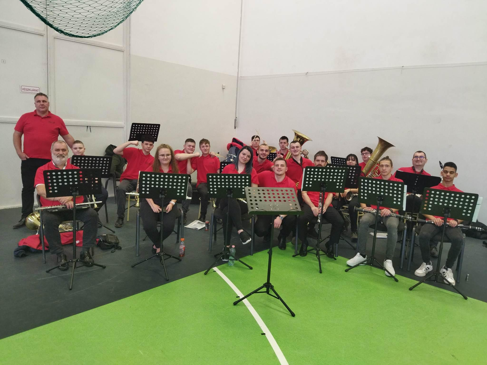

☰ Menü
Kezdőlap
Magamról
Hobby
A Hobbym, a zenélés. Lassan 9 éve hogy zenélek, valamit már 7 éve benne vagyok az Újfehértói fúvós egyesületben.
A zenekar olyan számomra, mint a második családom. Mindig, mindenben egymás mellett vagyunk.
